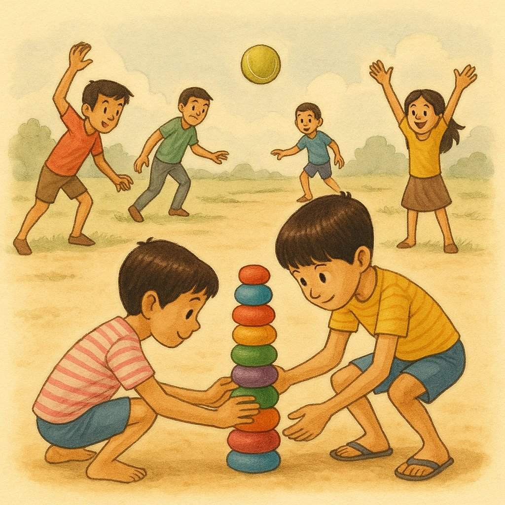
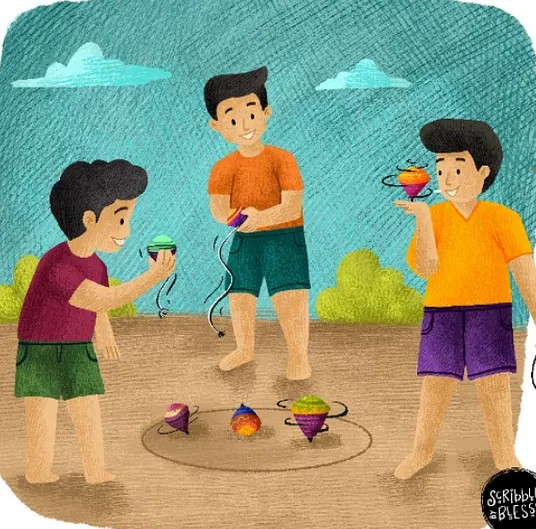

A skipping rope (or jump rope) is equipment used in sport and play that involves rhythmically jumping over a rope swung underfoot and overhead. The activity is practiced recreationally and competitively, with disciplines such as freestyle routines (featuring creative, combination techniques) and speed events (maximum jumps within timed intervals).
Rules
Skipping rope requires maintaining a light, bouncy motion on the balls of your feet, jumping only 1–2 inches off the ground with knees slightly bent. Keep elbows tucked near the ribs, using wrists—not arms—to turn the rope. Maintain an upright posture, looking forward, not down.
2. Lagori

Information
Lagori/Pitthu is an outdoor team sport of using a ball to hit and break a stack of stone discs. After hitting the lagori—the stack of stone discs—the members of the breaker team rearrange the stack hurriedly while the opposing team catches the ball to quickly hit the members of the breaker team before the lagori is restacked. This game is founded on swift actions and well-timed responses. Originating in southern India, the game is now popular all over the country and in many parts of the world, covering about 30 countries. The International Lagori Federation governs the global community, sets rules and organises tournaments. The name satoliya is equally popular in many parts of India, referring to the seven stone discs that are stacked.
Rules
The rules of a game are established guidelines and constraints designed to ensure fairness, structure, and an enjoyable experience for players. These rules define the objective, such as collecting4 of a kind, mapping out player turns (or lack thereof in simultaneous games), and outlining allowed actions, such as exchanging cards or moving pieces in a specific manner
3. Bhavra

Information
In Bhavra, it remains a popular summer pastime for children. The game involves a triangular toy called Bhavra, which has notches for wrapping a rope. When the rope is pulled, the Bhavra spins rapidly on the ground. Kids often add their twists to the game, such as spinning the Bhavra with their hands or inventing new variations. There is a local belief that the game's spinning motion is somehow connected to the rotation of the Earth.
Rules
Lattu is a traditional Indian game where players wind a string around a wooden top and flick it to spin on its metal nail. The rules focus on achieving the longest spin or using one's top to strike and knock an opponent's top out of a circle (Aata). Skilled players also perform "lifts," catching the spinning top from the ground using only the string.
4. Lapa-Chupi
Information
Hide-and-seek (sometimes known as hide-and-go-seek) is a children's game in which at least two players (usually at least three) conceal themselves in a set environment, to be found by one or more seekers. The game is played by one chosen player (designated as being "it") counting to a predetermined number with eyes closed while the other players hide. After reaching this number, the player who is "it" calls "Ready or not, here I come!" or "Coming, ready or not!" and then attempts to locate all concealed players.
Rules
Luka-chupi (Hide and Seek) begins with selecting a "seeker" (denner) who counts at a designated "home base" while others hide. Once the count ends, the seeker searches for hiders, who may attempt to return to the base safely to avoid being tagged. The game concludes when all players are found or reach the base, typically making the first person caught the next seeker.
5. Vitti-Dandu
Information
Viti Dandu, also known as Gilli Danda, is a traditional Indian street game that has been enjoyed for generations. It is played with two sticks: a long stick called the danda and a smaller, tapered stick known as the gilli. The game is typically played outdoors and can accommodate various numbers of players, usually divided into two teams. In Bhandara, Viti Dandu is often played in local neighborhoods and schools, making it a popular pastime among children and young adults.
Rules
Vitti Dandu is a traditional game played with a long stick (danda) and a small wooden piece (gilli). The striker flips the gilli into the air and hits it as far as possible, scoring points by reaching a target before the gilli is retrieved. A striker is out if the gilli is caught mid-air, if a fielder hits the danda with the gilli after it lands, or if they fail to hit the gilli in three attempts.
6. Andha-Dhund
Information
Andhra-Dhund (also known as Aankh Micholi or Dagudu Mootalu) is a traditional Indian version of Blind Man’s Buff popular in Andhra Pradesh. In this game, one player is blindfolded and must navigate by sound and touch to catch the other players moving around them. Once a player is caught, the seeker must correctly identify them; if successful, the captured player becomes the next "blind man."
Rules
Andhra-Dhund is a traditional game where a blindfolded "seeker" tries to catch other players by following their sounds or movements. Once a player is caught, the seeker must correctly identify them through touch; if successful, the captured player becomes the next seeker.